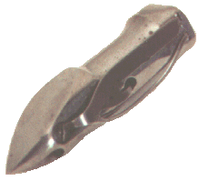
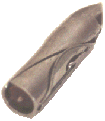
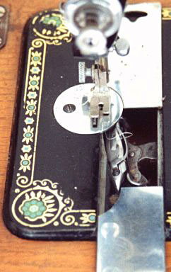

The Vibrating Shuttle holds the bobbin in a cylinder as shown in the illustrations above. These are Singer shuttles. When mounted in the machine the shuttle oscillates in an arc at right angles to the head. This can be seen in the illustration of the shuttle mounted in a Federation (Jones) Family CS below.
